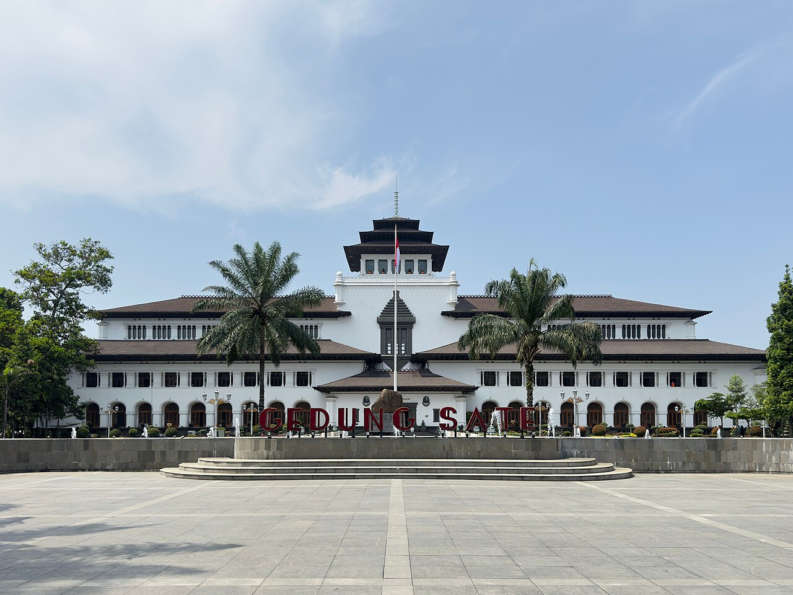

Gedung Sate
A landmark built in 1920 and now the office of the West Java Governor. Its roof ornament looks like a skewer of satay, which gave the building its name. Part of it is open as a museum.
Jl. Diponegoro No. 22, Citarum, Bandung Wetan, Kota Bandung